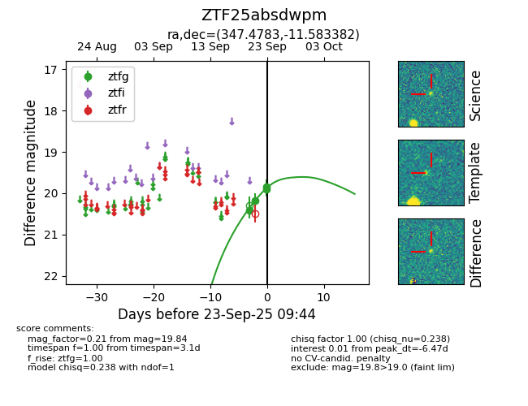
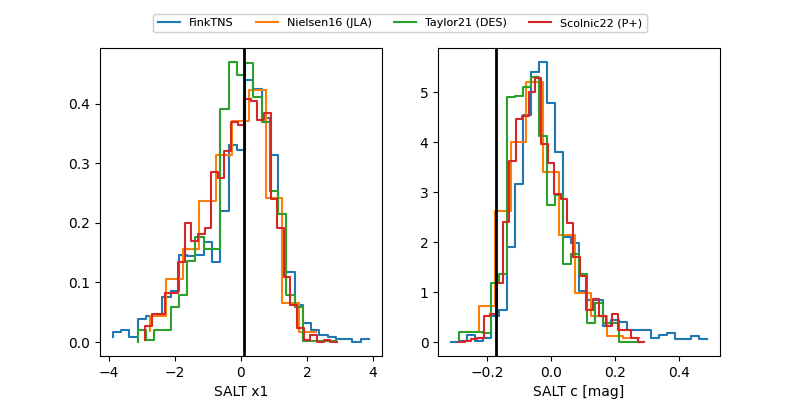

FINK: ZTF25absdwpm
Lasair: ZTF25absdwpm
ALeRCE: ZTF25absdwpm
ZTF25absdwpm (ztf,fink)
equatorial (ra, dec) = (347.4783,-11.58338)
galactic (l, b) = (61.1025,-61.55386)


last ztfg=19.84
4 ztfg detections